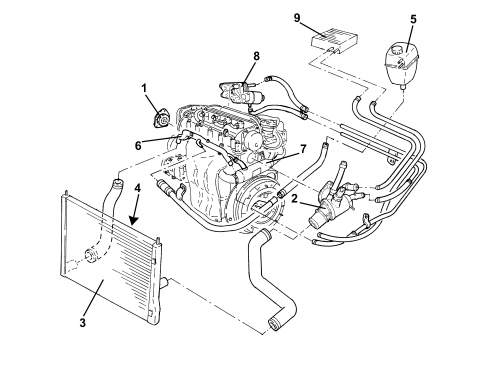

INTRODUCTION - ENGINE COOLING
- Path
- Descriptions > 10 ENGINE > 1088 ENGINE COOLING > INTRODUCTION - ENGINE COOLING
- Kind
- system description
- Applies to
- engines: 1.9 JTD 16v; all production periods
- Interactive page
- https://sloeber94.github.io/elrnDB-fCrm/en/#/194002449
Applies to: engines: 1.9 JTD 16v; all production periods
ENGINE COOLING SYSTEM

1. Water pump
2. Thermostat
3. Radiator
4. Fan
5. Supply reservoir
6. Water pump rigid inlet pipe
7. Water/exhaust gas heat exchanger for E.G.R. system.
8. Water/engine oil heat exchanger
9. Heater unit